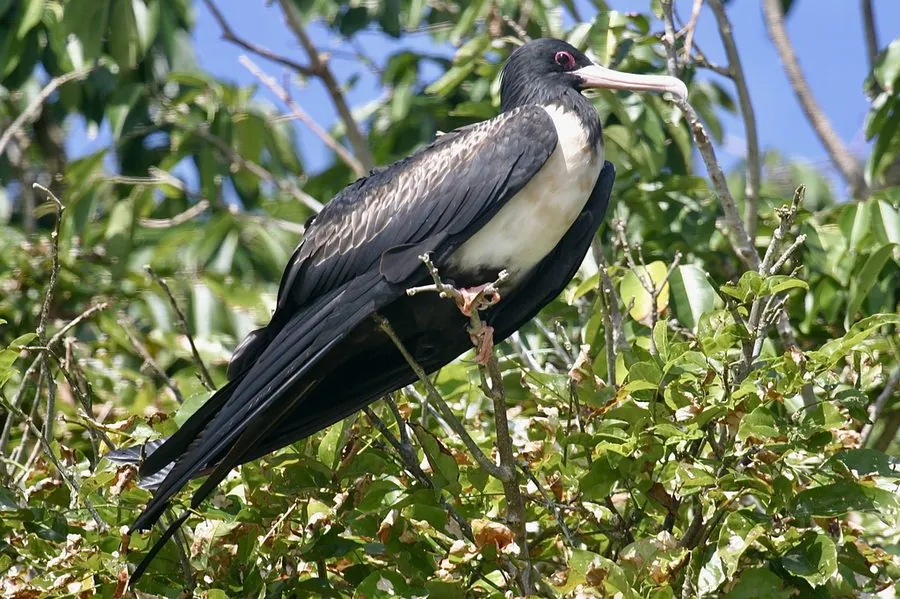

鸟类 · 动物界
白斑军舰鸟 Fregata ariel

热带海鸟，雄鸟通体黑色、喉部红色喉囊可充气，雌鸟腹部白色，常在空中拦截其他海鸟抢夺食物，被称为“海盗鸟”。
- 分类
- 门脊索动物门纲鸟纲目鲣鸟目科军舰鸟科属军舰鸟属
- 栖息环境
- 热带海洋及岛屿，繁殖期在岛上树冠或灌木上营巢
- 地理分布
- 热带印度洋和太平洋，中国南海诸岛有分布
- 保护级别
- IUCN 无危（LC）；中国国家二级保护动物
物种志
白斑军舰鸟体长 71–81 cm，翼展 175–193 cm，体重 600–900 g。雄鸟通体黑色，喉部有一个可以充气的鲜红色喉囊，繁殖期会鼓起炫耀；雌鸟背部黑色、腹部白色，翅膀下有白色斑块。它的翅膀极长而尖，飞行轻捷。
白斑军舰鸟广泛分布于热带印度洋和太平洋，中国南海诸岛有分布。它们能在海上长时间飞行，却几乎不能在水面停留，捕食主要靠在空中拦截其他海鸟，逼迫对方吐出食物，因此被称为“海盗鸟”，也捕食飞鱼和乌贼。繁殖期在岛屿树冠或灌木上营巢，每窝产卵 1 枚，孵化 45–50 天。白斑军舰鸟是热带海洋生态的重要成员，在中国被列为国家二级保护动物。
形态与习性
- 食性飞鱼、乌贼，常抢夺其他海鸟的食物
- 体长71–81 cm
- 翼展175–193 cm
- 繁殖每窝 1 枚卵，孵化 45–50 天
- 特征雄鸟喉部有可充气的红色喉囊
- 寿命野外约 20 年
趣味知识
- 白斑军舰鸟常在空中拦截其他海鸟，逼迫对方吐出食物，被称为“海盗鸟”。
- 雄鸟繁殖期会把喉部的红色喉囊充气鼓起，用来吸引雌鸟。
- 它的翅膀极长而尖，能长时间在海上滑翔。